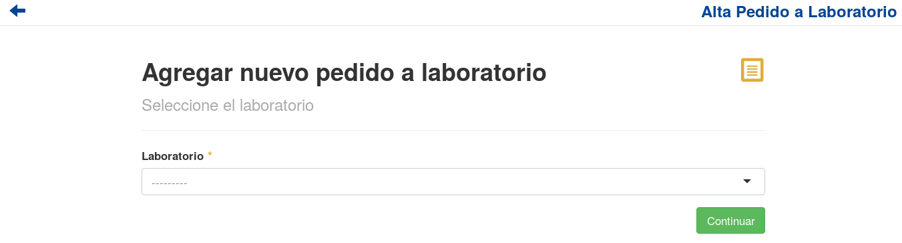

Pedidos a Laboratorio¶
Se presentará una pantalla que contendrá un listado con todos los Pedidos a Laboratorio que se encuentren registrados en el sistema hasta la fecha.

Junto con el listado, se ofrecerán un conjunto de funcionalidades que permitirán manipular estos Pedidos a Laboratorio. Estas funcionalidades son:
Alta Pedido¶
Si el usuario desea crear un nuevo Pedido a Laboratorio, deberá presionar el botón Alta.

A continuación el sistema lo redirigirá a la siguiente pantalla:
En este punto el usuario deberá seleccionar el laboratorio al cual desea realizarle el pedido. A continuación deberá presionar el botón Continuar.
Atención
El sistema siempre validará que la información ingresada sea correcta. En caso de que los datos ingresados sean incorrectos el sistema lo informará. En este punto, las posibles causas de errores son:
- No se seleccionó un laboratorio.
Una vez presionado el botón Continuar, se mostrará la siguiente pantalla:

Esta pantalla es la encargada de visualizar aquellos detalles que se irán asociando al Pedido a Laboratorio.
Nota
De forma automática el sistema se encargará de buscar y agregar al Pedido a Laboratorio aquellos detalles que pertenezcan a Pedidos de Farmacia y que cumplan las siguientes condiciones:
- Que contengan un medicamento producido por el laboratorio al cual se le está realizando el pedido.
- Que no haya stock suficiente para satisfacer el medicamento que compone al detalle.
- Que no se encuentren dentro de algún otro Pedido a Laboratorio.
Esta pantalla ofrece las siguientes funcionalidades:
Agregar Detalle¶
Si el usuario desea agregar un detalle al Pedido a Laboratorio, deberá presionar el botón Alta Detalle.

Una vez realizado el paso anterior aparecerá la siguiente ventana emergente (modal):

En esta parte, se presentará un formulario que el usuario deberá completar para poder dar de alta un nuevo detalle.
Atención
El sistema siempre validará que la información ingresada sea correcta. En caso de que los datos ingresados sean incorrectos el sistema lo informará. En este punto, las posibles causas de errores son:
- No se seleccionó un medicamento.
- No se ingresó una cantidad.
- La cantidad ingresada no posee un formato correcto.
- La cantidad ingresada es menor a cero.
Una vez completado el formulario, el usuario deberá presionar el botón Guardar y el sistema se encargara de agregar el nuevo detalle al pedido.
El usuario podrá seguir dando de alta nuevos detalles, hasta donde considere necesario. Una vez que esto suceda deberá presionar el botón Cerrar y la ventana emergente desaparecerá.
Modificar Detalle¶
Si el usuario desea modificar un detalle del Pedido a Laboratorio, deberá seleccionar el detalle que desea actualizar y presionar el botón Modificar Detalle.

Importante
NO se podrán actualizar aquellos detalles que se correspondan con Pedidos de Farmacia (aquellos que el sistema agrega automáticamente al ingresar a esta pantalla).
Una vez realizado el paso anterior aparecerá la siguiente ventana emergente (modal):

En esta parte, se presentará un formulario con la información actual del detalle y el usuario deberá actualizar aquella que considere necesaria.
Atención
El sistema siempre validará que la información ingresada sea correcta. En caso de que los datos ingresados sean incorrectos el sistema lo informará. En este punto, las posibles causas de errores son:
- No se ingresó una cantidad.
- La cantidad ingresada no posee un formato correcto.
- La cantidad ingresada es menor a cero.
Una vez completado el formulario, el usuario deberá presionar el botón Guardar y el sistema se encargará de actualizar la información de dicho detalle.
Eliminar Detalle¶
Si el usuario desea eliminar un detalle del Pedido a Laboratorio, deberá seleccionar el detalle que desea eliminar y presionar el botón Baja Detalle.

Una vez realizado el paso anterior aparecerá la siguiente ventana emergente (modal):

En esta parte el usuario deberá decidir si confirma la eliminación del detalle o no. Si desea confirmar la eliminación deberá presionar el botón Confirmar, caso contrario, presionará el botón Cancelar.
Registrar Pedido¶
Si el usuario desea registrar el Pedido a Laboratorio, deberá presionar el botón Registrar.
Atención
El sistema siempre validará que la información del Pedido a Laboratorio sea correcta. En caso de que esta información sea incorrecta el sistema lo informará. En este punto, las posibles causas de errores son:
- El pedido no contiene detalles
- El pedido ya ha sido registrado anteriormente
Una vez presionado el botón Registrar, el sistema se encargará de crear el Pedido a Laboratorio y se mostrará la siguiente ventana emergente (modal).
Cancelar un Pedido¶
Si el usuario desea cancelar un Pedido a Laboratorio, deberá seleccionar el botón de Acción asociado a dicho pedido y presionar la pestaña Cancelar.
Importante
Solo se podrán cancelar aquellos Pedidos a Laboratorio que se encuentren en un estado “Pendiente”.

Una vez realizado el paso anterior aparecerá la siguiente ventana emergente (modal):

En esta parte el usuario deberá decidir si confirma la eliminación del Pedido a Laboratorio. Si desea confirmar la eliminación deberá presionar el botón Confirmar, caso contrario, presionará el botón Cancelar.
Ver Detalles¶
Si el usuario desea ver los detalles de un Pedido A Laboratorio, deberá seleccionar el botón de Acción asociado a dicho pedido y presionar la pestaña Ver Detalles.

Una vez realizado el paso anterior aparecerá la siguiente ventana emergente (modal):

Esta ventana mostrará todos los detalles del Pedido a Laboratorio seleccionado.
Ver Remitos¶
Si el usuario desea ver los remitos asociados a un Pedido a Laboratorio, deberá seleccionar el botón de Acción asociado a dicho pedido y presionar la pestaña Ver Remitos.

Una vez realizado el paso anterior aparecerá la siguiente ventana emergente (modal):

Esta ventana mostrará todos los remitos vinculados al Pedido a Laboratorio seleccionado.
Nota
En caso de que el pedido no tenga remitos asociados el sistema lo informará.
El usuario tendra la opción de visualizar un remito en PDF, presionanado el boton Descargar asociado a él.
Formulario de Búsqueda¶
Si el usuario desea visualizar sólo aquellos Pedidos a Laboratorio que cumplan con algunos criterios en específico, deberá utilizar el formulario de búsqueda.

Este formulario cuenta con dos modalidades:
- Búsqueda simple: permite buscar los Pedidos a Laboratorio por laboratorio.
- Búsqueda avanzada: permite buscar los Pedidos a Laboratorio por laboratorio, fecha desde, fecha hasta.
Nota
Todos los campos son opcionales, de no especificarse ningún criterio de búsqueda el sistema mostrará todos los Pedidos a Laboratorio.
El usuario tendrá que ingresar los parámetros de búsqueda en el formulario, y presionar el botón Buscar. El sistema visualizará aquellos Pedidos a Laboratorio que cumplan con todas las condiciones especificadas.
Si el usuario desea limpiar los filtros activos, deberá presionar el boton Limpiar.